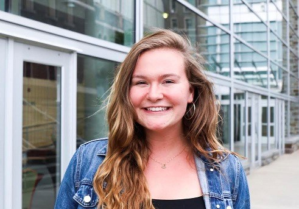

ELIZABETH CROTTY
What inspired you to pursue engineering at Cornell?
I had never taken a computer science class before but it was required for the engineering degree. I took Python in my second semester which opened my eyes to the world of computer science. I just thought it was amazing to find this new way to think about problems. I majored in Information Science, Systems, and Technology which has around half of the requirements of a typical computer science degree but also included design-oriented classes and ethics. Ultimately, I chose to focus on design because I enjoyed planning and imagining the possibilities more so than software engineering.
What was your favorite class or professor at Cornell?

You have interned for a start-up/non-profit organization and Microsoft. Can you talk about the similarities and differences between those experiences?
At Microsoft, my team, Fast Track for Azure, was fairly new so I was just given an open-ended project and I had to make those initial prioritization steps. For example, most of my days were in meetings with “clients” which, for my project, were internal Microsoft employees. We talked about what they wanted to change about the current product I was working on. I also met with developers to talk about the feasibility of my designs. Other times, I was analyzing the data that I collected from people to develop mock-ups and prototypes. I didn't get very far though because the initial planning steps were more the focus for PM (Program Manager) internships.
Everyone's internship experience can be different though; a lot of my friends who also had internships in Microsoft were given a more specific goal. There is definitely a range of how technical you can get as a PM though which is what I love about it. You can involve yourself as much as you want to with the software process, but also make high-level decisions about what to change about a product.
Can you talk about the internship application and interview process?
The most common tip I heard from recruiters was to be passionate about your work. During the interview especially, it’s important to speak about your experiences in a way that makes people excited to learn more about it and more about you.